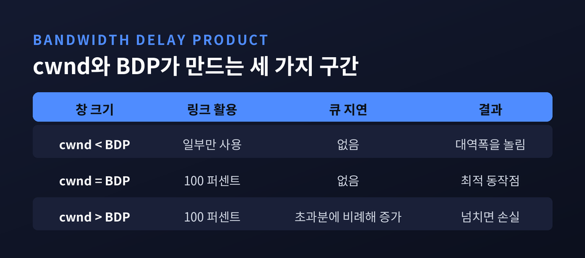
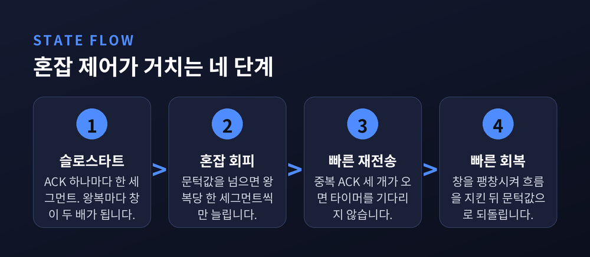
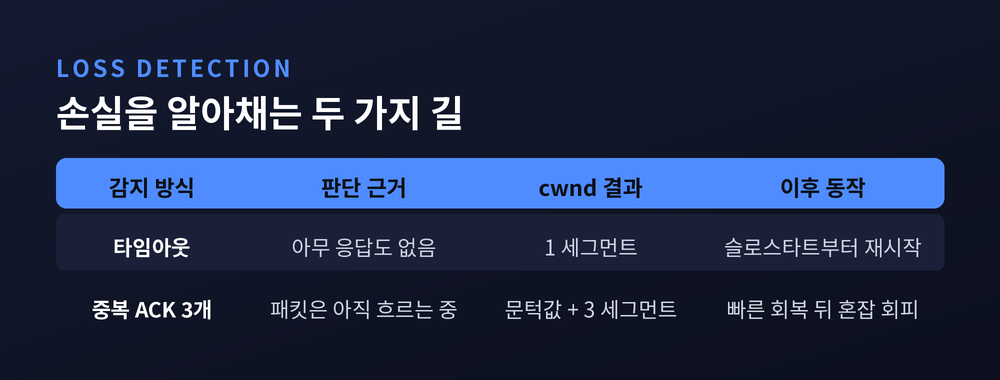
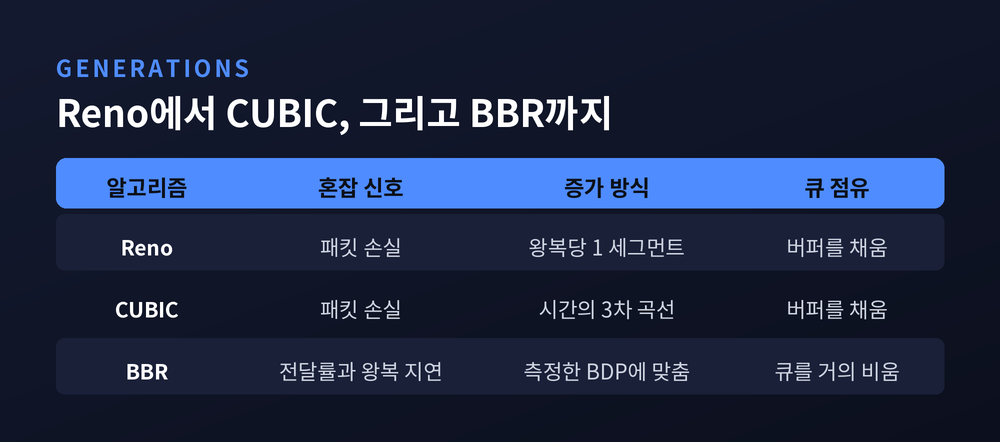

TCP 혼잡 제어 원리 — 네트워크가 막힐 때 전송 속도를 조절하는 법

이번 글에서는 TCP가 네트워크의 막힘을 알아채고 전송 속도를 스스로 낮추는 구조를 정리해 보겠습니다. 라우터가 "천천히 보내라"고 지시해 주는 것이 아닙니다. 보내는 쪽이 돌아오는 응답만 보고 혼자 판단합니다. 그 판단 규칙이 지난 40년 동안 어떻게 바뀌어 왔는지까지 함께 따라가겠습니다.
1986년 10월, 속도가 800분의 1로 떨어졌습니다
혼잡 제어는 책상 위에서 설계된 기능이 아닙니다. 사고가 먼저 있었습니다.
1986년 10월, 인터넷은 첫 번째 혼잡 붕괴(congestion collapse)를 겪었습니다. 밴 제이콥슨과 마이클 카렐스가 남긴 기록은 구체적입니다. 로렌스 버클리 연구소에서 UC 버클리까지의 처리량이 32Kbps에서 40bps로 떨어졌습니다. 800분의 1입니다. 두 지점 사이의 거리는 고작 400야드, 약 366미터였습니다. 중간에 놓인 라우터도 두 대뿐이었습니다.
당시 상황은 이랬습니다. 게이트웨이가 버퍼 넘침 때문에 들어오는 패킷의 10% 정도를 버리는 것이 흔한 일이었습니다.
원인은 악순환이었습니다. 큐가 넘쳐 패킷이 버려집니다. 송신자는 응답이 없으니 다시 보냅니다. 재전송된 패킷이 큐를 더 밀어냅니다. 링크는 쉬지 않고 바쁜데, 정작 목적지에 도착하는 유효한 데이터는 거의 없습니다.
두 사람의 진단은 뜻밖이었습니다. 프로토콜 설계가 아니라 구현이 문제였다는 것입니다. 그리고 해법으로 하나의 원칙을 세웠습니다. 패킷 보존(packet conservation) 원칙입니다.
연결이 안정 상태에 있다면, 새 패킷은 기존 패킷 하나가 네트워크를 빠져나간 뒤에야 들어가야 합니다. 빈자리가 생겨야 채웁니다. 오늘날의 혼잡 제어는 전부 이 한 문장의 변주입니다.
속도가 아니라 '창'을 조절합니다
TCP에는 초당 몇 메가비트를 보내라는 설정값이 없습니다. 대신 창(window)의 크기를 조절합니다.
핵심 변수는 두 개입니다.
- rwnd(수신 윈도) — 받는 쪽이 "내 버퍼는 이만큼 남았다"고 알려주는 한도입니다.
- cwnd(혼잡 윈도) — 보내는 쪽이 "네트워크가 이만큼은 감당하겠다"고 스스로 정하는 한도입니다.
실제 송신 한도는 둘 중 작은 값입니다. rwnd는 상대방이 정해 주지만, cwnd는 아무도 알려주지 않습니다. 추정해야 합니다.
처리량은 단순한 비례 관계로 정리됩니다.
처리량 ≈ cwnd / RTT
한 번의 왕복 시간(RTT) 동안 최대 cwnd만큼 보낼 수 있으니 당연한 식입니다. 여기서 대역폭지연곱(BDP)이 등장합니다.
BDP = 병목 대역폭 × 왕복 전파 지연
구글 BBR 논문의 비유가 명쾌합니다. 경로를 물리적인 파이프라고 보면, 왕복 전파 지연은 파이프의 길이이고 병목 대역폭은 가장 좁은 지점의 지름입니다. BDP는 그 파이프의 부피입니다.
cwnd를 이 부피와 비교하면 세 가지 상황이 나옵니다.
cwnd가 BDP보다 작으면 파이프가 덜 찹니다. 링크는 놀고 있는데 속도가 안 납니다.
cwnd가 BDP와 같으면 최적입니다. 링크는 100% 쓰이고 큐는 비어 있습니다.
cwnd가 BDP보다 크면 초과분이 병목 라우터의 큐에 쌓입니다. 이때 RTT는 초과분에 정확히 비례해 늘어납니다. 그리고 초과분이 버퍼 용량마저 넘기면, 그제야 패킷이 버려집니다.
혼잡이란 결국 BDP 선 오른쪽에서 계속 머무는 상태입니다. 혼잡 제어는 얼마나 오른쪽까지 가도 되는지를 정하는 규칙인 셈입니다.

슬로스타트 — 이름과 달리 두 배씩 오릅니다
연결이 막 열렸을 때 TCP는 경로에 대해 아무것도 모릅니다. 그래서 작게 시작합니다.
RFC 5681이 정한 초기 윈도(IW)는 세그먼트 크기에 따라 달라집니다. 흔한 이더넷 환경의 MSS 1460바이트라면 3 세그먼트입니다. 약 4KB 남짓을 먼저 던져 보는 것입니다.
그다음부터가 슬로스타트입니다. 규칙은 간단합니다.
cwnd += min(N, SMSS) # N = 이 ACK가 새로 확인해 준 바이트 수
새 데이터를 확인해 주는 ACK가 하나 올 때마다 창을 한 세그먼트씩 키웁니다. 창이 3이면 ACK도 3개가 돌아오고, 창은 6이 됩니다. 다음 왕복엔 12입니다. RTT 한 번마다 두 배입니다.
이름은 '느린 시작'인데 실제로는 지수적으로 오릅니다. 모순처럼 보입니다만, 기준이 다릅니다. 그 전까지 TCP는 창 전체를 한꺼번에 밀어 넣었습니다. 그에 비하면 느리다는 뜻입니다.
이 식에 min(N, SMSS)가 들어간 이유도 짚어둘 만합니다. 악의적인 수신자가 ACK 하나를 여러 개로 쪼개 보내 창을 부풀리는 공격(ACK Division)을 막기 위해서입니다. 보안까지 고려된 형태입니다.
초기 윈도 3 세그먼트는 지금 기준으로 답답합니다. 그래서 2013년 RFC 6928이 10 세그먼트를 제안했습니다. 구글이 대규모 실험으로 검증한 값입니다. 10으로 올려도 재전송률이 유의미하게 늘지 않으면서 이득은 대부분 얻을 수 있었습니다. MSS 1460바이트 기준으로 약 14KB입니다. 짧은 HTTP 응답 대부분이 첫 왕복 한 번에 끝납니다.
다만 RFC 자신이 한계를 적어 두었습니다. 웹 객체가 계속 커지면 10도 작을 수 있고, 적정값을 자동으로 찾는 방법은 아직 없다는 것입니다.

혼잡 회피 — 올릴 땐 조금씩, 내릴 땐 절반으로
창이 ssthresh(슬로스타트 문턱값)를 넘으면 기어가 바뀝니다. 혼잡 회피 구간입니다.
여기서부터는 RTT당 딱 한 세그먼트만 늘립니다. 매 ACK마다 쓰는 근사식은 이렇습니다.
cwnd += SMSS × SMSS / cwnd
창이 클수록 한 번에 붙는 양이 작아집니다. 합쳐 보면 왕복 한 번에 약 한 세그먼트가 됩니다. RFC는 "RTT당 SMSS를 초과해 늘려서는 안 된다"고 못 박았습니다.
손실을 만나면 이야기가 달라집니다.
ssthresh = max(FlightSize / 2, 2 × SMSS)
FlightSize는 보냈지만 아직 확인받지 못한 데이터 양입니다. 그 절반으로 문턱을 내립니다. 여기서 RFC가 직접 경고하는 실수가 하나 있습니다. cwnd가 아니라 FlightSize를 써야 한다는 것입니다. 구현에 따라 cwnd는 실제 흐르는 양보다 훨씬 부풀어 있을 수 있기 때문입니다.
올릴 때는 더하기, 내릴 때는 곱하기. 이 비대칭이 AIMD(Additive Increase, Multiplicative Decrease)입니다. 조심스럽게 올라가고 과감하게 내려오는 쪽이 네트워크 전체로는 안정적이기 때문입니다.
손실을 알아채는 두 가지 길
TCP가 "패킷이 사라졌다"고 판단하는 경로는 둘입니다. 그리고 두 경로의 처벌 강도는 크게 다릅니다.
첫째, 타임아웃(RTO)입니다. 재전송 타이머가 다 돌 때까지 아무 소식이 없는 경우입니다. 이때 cwnd는 1 세그먼트로 떨어집니다. 초기 윈도가 얼마였든 상관없습니다. 바닥까지 내려간 뒤 슬로스타트부터 다시 시작합니다.
둘째, 중복 ACK 3개입니다. 수신자가 같은 지점을 가리키는 ACK를 세 번 되풀이하면, 그 지점의 세그먼트가 사라졌다고 봅니다. 타이머를 기다리지 않고 바로 다시 보냅니다. 이것이 빠른 재전송(fast retransmit)입니다.
이어지는 빠른 회복(fast recovery)의 절차가 흥미롭습니다.
- 세 번째 중복 ACK에서 ssthresh를 위 식대로 내립니다.
- 잃어버린 세그먼트를 재전송하면서 cwnd = ssthresh + 3×SMSS로 만듭니다.
- 중복 ACK가 하나 더 올 때마다 cwnd를 SMSS씩 더 키웁니다.
- 새로운 데이터를 확인해 주는 ACK가 오면 cwnd를 ssthresh로 되돌립니다.
2번에서 일부러 3을 더하는 이유가 핵심입니다. 중복 ACK 세 개는 세 개의 패킷이 이미 네트워크를 빠져나가 수신자에게 도착했다는 증거입니다. 그만큼 파이프에 빈자리가 생겼으니 채워도 됩니다. RFC는 이를 창의 '팽창(inflating)'이라 부르고, 4번의 원상복귀를 '수축(deflating)'이라 부릅니다.
정리하면 이렇습니다. 중복 ACK가 돌아온다는 것은 패킷이 아직 흐르고 있다는 뜻입니다. 그래서 덜 비관적으로 판단합니다. 반대로 타임아웃은 아무 소식도 없는 상태입니다. 최악을 가정할 수밖에 없습니다.
RFC 5681은 이 알고리즘의 한계도 함께 적어 두었습니다. 한 번의 전송 묶음에서 여러 패킷이 동시에 사라지면, 이 방식만으로는 회복이 효율적이지 않습니다. SACK 기반의 더 정교한 회복이 따로 필요합니다.

CUBIC — 리눅스가 기본으로 쓰는 계산법
지금 쓰시는 리눅스 서버의 기본 혼잡 제어는 거의 확실히 CUBIC입니다. 커널 2.6.19, 2006년부터 기본값입니다. 윈도우와 애플 스택도 채택했습니다. sysctl net.ipv4.tcp_congestion_control로 확인하실 수 있습니다.
예전 Reno는 RTT를 기준으로 창을 키웠습니다. 지금 CUBIC은 실제 경과 시간을 기준으로 키웁니다. 이 한 끗이 많은 것을 바꿨습니다.
증가 함수는 3차 곡선입니다.
W_cubic(t) = C × (t - K)³ + W_max
t— 마지막 혼잡 이후 흐른 시간(초)W_max— 혼잡 직전에 도달했던 창 크기K— 창을 다시 W_max까지 끌어올리는 데 걸리는 시간C— 스케일 상수, 0.4를 권장합니다
곡선의 모양이 이 알고리즘의 성격을 그대로 보여줍니다. 손실 직후에는 가파르게 올라갑니다. W_max 근처에 이르면 평평해집니다. 지난번에 문제가 생겼던 높이이니 조심스럽게 더듬습니다. 그래도 아무 일이 없으면, W_max를 넘어서며 다시 공격적으로 올라갑니다. 오목하게 올라가 평평해졌다가 볼록하게 솟는 모양입니다.
감소 계수도 다릅니다. Reno가 절반을 깎는 반면, CUBIC의 β는 0.7입니다. 30%만 깎습니다.
RTT 의존성이 줄어든 점도 중요합니다. 증가량이 ACK 횟수가 아니라 시간 t의 함수이기 때문입니다. RFC 9438의 표현을 빌리면, RTT가 서로 다른 흐름들도 정상 상태에서 비슷한 크기의 창을 갖습니다. 예전 방식에서는 가까운 서버가 먼 서버를 일방적으로 밀어냈습니다.
물론 만능은 아닙니다. CUBIC도 결국 손실을 혼잡의 신호로 읽습니다. 그리고 RFC 9438은 짧은 RTT와 좁은 대역폭에서는 Reno처럼 동작하도록 일부러 설계했다고 밝힙니다. 'Reno 친화 구간'이라 부르는 영역입니다. 빠르기만 한 알고리즘이 아니라, 기존 흐름과 공존하도록 타협한 알고리즘입니다.
버퍼블로트 — 버퍼가 너무 커서 생긴 병
손실 기반 혼잡 제어에는 구조적인 함정이 있습니다. 2010년 짐 게티스가 자택에서 그 함정을 밟았습니다.
"오늘은 인터넷이 느려요, 아빠." 집에서 자주 듣던 말이었다고 합니다. 원인을 찾으려 하면 증상이 사라졌습니다. 디버깅을 하려고 대용량 전송을 멈추는 순간, 문제를 일으키던 원인도 함께 멈췄기 때문입니다.
MIT로 20GB를 보내며 측정한 값은 이랬습니다. 혼잡이 없을 때 이 경로의 RTT는 10밀리초 미만입니다. 그런데 실제로는 1.2초가 넘는 지연을 겪고 있었습니다.
패킷 캡처를 뜯어보니 숫자가 더 분명해졌습니다. 상향 대역폭 2Mbps에 RTT 10ms이면 진짜 BDP는 2.5KB입니다. 그런데 실제로 날아다니는 데이터는 500KB였습니다. 200배입니다. 500KB를 2Mbps로 비우는 데 걸리는 시간이 딱 1초입니다. 계산이 맞아떨어졌습니다.
이것이 버퍼블로트입니다. 원인은 단순합니다. 메모리가 싸졌고, 패킷을 버리기 싫었던 장비 제조사들이 버퍼를 넉넉하게 넣었습니다. 2010년 13만 건 규모의 측정에서 케이블 장비의 지배적인 버퍼 크기는 128KB와 256KB였습니다. 3Mbps 상향에서 128KB를 비우려면 340밀리초가 걸립니다.
문제는 TCP가 이 버퍼를 파이프의 일부로 착각한다는 데 있습니다. 슬로스타트는 손실이 보여야 멈추는데, 버퍼가 너무 크니 손실이 한참 뒤에야 나타납니다. 그동안 창은 계속 자랍니다. 그리고 큐가 꽉 찬 뒤에야 패킷이 무더기로 버려집니다.
가장 무서운 대목은 반응 속도입니다. 게티스와 니콜스의 지적은 이렇습니다. 버퍼가 10배 크면 지연만 10배가 아니라, 혼잡에 반응하는 시간이 100배가 됩니다. 2차로 악화됩니다. 짧은 대화형 연결은 링크를 포화시킨 대용량 전송에 완패합니다.
해법은 버퍼를 줄이는 것이 아니라 관리하는 것이었습니다. CoDel은 큐의 길이가 아니라 패킷이 큐에 머문 시간을 봅니다. 여기에 흐름별 공정 큐잉을 결합한 것이 fq_codel입니다. 리눅스 기본 설정은 목표 지연 5밀리초, 관찰 구간 100밀리초입니다.
효과에 대한 증언이 인상적입니다. 거의 모든 장비에서 수 초의 큐 지연을 보던 세상에서 5밀리초의 세상으로 넘어왔다는 것입니다. 파이프를 채우고 큐는 채우지 않게 되었다는 말과 함께였습니다.
BBR — 손실 대신 모델을 봅니다
구글이 2016년에 내놓은 BBR은 질문 자체를 바꿨습니다.
논문의 문제 제기는 이렇습니다. 손실을 혼잡과 동일시한 것은 1980년대의 선택이었고, 당시에는 맞았지만 기술적 한계 때문이지 제1원리는 아니었다는 것입니다. 랜카드가 Mbps에서 Gbps로 가고 메모리가 KB에서 GB로 가는 동안, 손실과 혼잡의 상관관계는 점점 희미해졌습니다.
결과는 양쪽 모두에서 나빴습니다. 버퍼가 크면 손실 기반 제어가 그 버퍼를 꽉 채워 버퍼블로트를 만듭니다. 버퍼가 작으면 우연한 손실을 혼잡으로 오해해 속도를 못 냅니다.
BBR은 두 값을 직접 추정합니다. 이름 그대로입니다.
- BtlBw — 병목 대역폭. 최근 6~10 RTT 동안 관측된 전달률의 최댓값
- RTprop — 왕복 전파 지연. 최근 수십 초 동안 관측된 RTT의 최솟값
목표는 하나입니다. 흐르는 데이터 양을 BtlBw × RTprop, 즉 BDP에 맞추는 것입니다. 파이프는 꽉 차되 큐는 비어 있는 지점입니다.
재미있는 것은 이 두 값을 동시에 잴 수 없다는 점입니다. 용량을 알려면 넘치게 보내야 하는데, 그러면 큐가 생겨 진짜 지연이 가려집니다. BBR은 순서를 나눠 푸는 방식을 택했습니다. 그래서 상태 기계가 있습니다.
| 상태 | 하는 일 |
|---|---|
| Startup | 매 라운드 전송률을 두 배로 올리며 병목 대역폭을 이진 탐색 |
| Drain | 탐색 과정에서 생긴 초과 큐를 한 라운드 만에 빼냄 |
| ProbeBW | 전체 시간의 약 98%. 게인을 5/4, 3/4, 1을 여섯 번 순으로 돌리며 여유를 탐색 |
| ProbeRTT | 10초 넘게 최소 RTT가 갱신되지 않으면 창을 4패킷으로 줄여 진짜 지연을 측정 |
ProbeRTT의 대가는 크지 않습니다. 10초에 200밀리초이니 약 2%입니다.
성과는 숫자로 남아 있습니다. 구글의 사내 백본 B4에서 BBR의 처리량은 CUBIC보다 일관되게 2~25배 높았습니다. 한 미국-유럽 구간에서 수신 버퍼 제약을 풀자 BBR은 2Gbps에 도달했고 CUBIC은 15Mbps에 머물렀습니다. 133배 차이입니다.
손실 내성 실험은 더 극적입니다. 100Mbps·100ms 링크에 무작위 손실을 주입했습니다. CUBIC은 손실률 0.1%에서 처리량이 10분의 1로 떨어지고, 1%를 넘으면 완전히 멈춥니다. BBR은 5%까지 이론적 상한을 유지하고 15%까지도 근접합니다.
유튜브 재생 연결 2억 건 이상을 5개 대륙에서 측정한 결과, BBR은 중앙값 RTT를 전 세계 평균 53%, 개발도상국에서는 80% 이상 줄였습니다.
그렇다고 BBR이 정답이라고 말하기는 어렵습니다. 논문 스스로 인정한 한계가 있습니다. 여러 BDP를 넘는 거대한 버퍼 앞에서는, 큐를 채워가며 버티는 손실 기반 경쟁자에게 제 몫을 빼앗깁니다. 착하게 굴다가 손해를 보는 셈입니다.
2023년 공개된 BBRv3는 현재 google.com과 유튜브의 모든 공인 인터넷 트래픽에 적용되어 있습니다. 재전송률이 12% 줄었다는 것이 구글의 보고입니다. 다만 2024년 ANRW에서 발표된 독립 연구는 다른 그림도 보여줍니다. ECN이 켜진 환경에서 BBRv3 흐름 하나가 CUBIC 흐름 다섯 개와 경쟁할 때, 대역폭의 99% 이상을 가져가는 경우가 관측되었습니다. 공정성 논의는 아직 진행 중입니다.

ECN — 버리지 말고 표시하십시오
여기까지의 이야기에는 공통점이 하나 있습니다. 혼잡을 알리는 수단이 패킷을 버리는 것이라는 점입니다.
생각해 보면 이상한 방식입니다. 급하다고 편지를 찢어서 알리는 셈이니까요. ECN은 이 부분을 고칩니다. 버리는 대신 표시합니다.
IP 헤더에는 이를 위한 2비트가 있습니다.
00Not-ECT — ECN을 모르는 송신자. 이 패킷은 여전히 버려야 합니다10ECT(0) — ECN을 아는 송신자01ECT(1) — ECN을 아는 송신자(L4S에서 따로 씁니다)11CE — Congestion Experienced. 라우터가 "여기 막혔다"고 찍은 도장입니다
라우터는 버퍼가 차오르면 패킷을 버리는 대신 CE로 바꿔 흘려보냅니다. 받은 쪽은 TCP 헤더의 ECE 플래그로 송신자에게 되돌려 알립니다. 송신자는 창을 줄인 뒤 CWR 플래그로 "줄였다"고 회신합니다.
손실이 없으니 재전송도, 재전송을 기다리는 시간도 사라집니다. 버퍼가 꽉 차기 전에 미리 알릴 수 있으니 큐 지연도 줄어듭니다.
CUBIC 명세는 이 차이를 구분해 반영합니다. 손실로 줄일 때는 창의 하한이 2 세그먼트지만, ECE 신호로 줄일 때는 1 세그먼트까지 허용합니다.
2023년 표준화된 L4S는 여기서 한 걸음 더 나갑니다. 남아 있던 마지막 코드포인트 ECT(1)을 가져다 씁니다. 기존 ECN보다 더 빨리, 더 자주 표시하되 표시 하나에 대한 반응은 작고 부드럽게 만드는 방식입니다. 그렇게 해서 큐를 아주 얕게 유지합니다.
정리하면 이렇습니다.
TCP 혼잡 제어의 40년은 같은 질문을 계속 다시 물어온 역사였습니다. "네트워크가 지금 얼마나 막혀 있는가." 1986년의 답은 패킷 보존이었고, Reno는 손실의 절반, CUBIC은 시간의 3차 곡선, BBR은 대역폭과 지연의 곱을 답으로 내놓았습니다.
어느 것도 완결된 답은 아닙니다. CUBIC은 버퍼를 채우고, BBR은 큰 버퍼 앞에서 양보하며, ECN은 경로의 모든 장비가 협조해야 동작합니다.
— 결국 혼잡 제어란 네트워크를 통제하는 기술이 아니라, 보이지 않는 상대를 계속 추측하는 기술입니다.
다음에 화상 회의가 끊길 때, 링크 속도만 탓하실 일은 아닐지도 모르겠습니다. 어딘가의 버퍼가 지금도 조용히 차오르고 있을 테니까요.